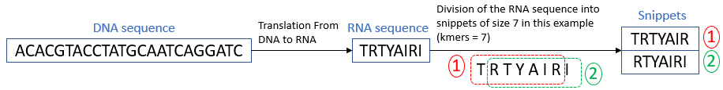
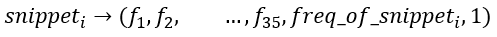
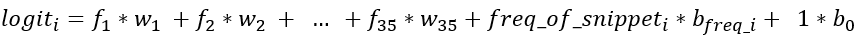
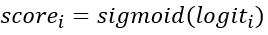
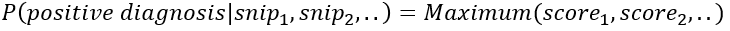

Leave 1 out Cross validation
If you want to test some models in order to check which is the best model for your research, it is possible to use the leave one out cross validation method by clicking here:
leave 1 out cross validation
Logistic Regression algorithm
Definitions
epochs epoch refers to one cycle through the full training dataset
learning rate learning rate is a tuning parameter in an optimization algorithm that determines the step size at each iteration while moving toward a minimum of a loss function.
threshold The output of a Logistic regression model is a probability. We can select a threshold value. If the probability is greater than this threshold value, the event is predicted to happen otherwise it is predicted not to happen.
split Percentage of the dataset for the trainning set. The rest of the dataset will be for validation set
kmers:The length of snippet.
Note :
It is important to point out that it will take a long time to receive the results, as the code run on the local system, which is made up of 8 i5 cores of intell, supporting 8GB of physical memory. When we subsequently transfer the program to the more powerful laboratory servers with 64 cores, as well as 16GB of RAM.
We focused on the CDR3 part of the antibodies which constitutes the specific part which can recognize an antigen or external element of our organism.
From the CDR3 nucleotide sequences of the antibodies, we wanted to predict with the help of Logistic regression algorithm whether a patient has Celiac disease or not.
The different steps that we are going to take in order to be able to predict from the CDR3 nucleotide sequences of the antibodies Here is the patient, if he has celiac disease or not:
The different stages are as follows:
1) Feature engineering
First we remove some of the antibodies containing stop codons in theirs DNA sequence of CDR3_IMGT, others containing NaN, some containing the letter “N”, and some containing a "-" . For example, For the celiac dataset, we delete 23 nucleotide sequences containing stop codons, 41415 containing the letter "N", 199 containing "-", and 411 containing NaN.
After cleaning up our DNA sequences that were invalid, for each patient, we translate DNA sequence of each antibodie in RNA sequences (amino acid sequence).
Then each sequence of amino acids is cut into several snippets of the same size as follows:

For a patient, let's keep only one snippet of each type and also keep the relative frequency of each snippet among all its snippets.
So at this point for each patient we have a table that contains unique snippet sequences.
Then finally, We transform each patient's snippet into a vector that contains the 5 atchley's factor of each amino acid in the snippet, The five Atchley factors correspond to polarity, secondary structure, molecular volume, codon diversity, and electrostatic charge. We add the snippet frequency among the total number of snippets of the patient, and we add 1 (it will be used for the bias for the machine learning that we will see below). For example, for a snippet of size 7, given that each amino acid corresponds to 5 atchley's factors, we thus obtain for each patient a table which contains the following vectors (each of them corresponding to a snippet):

Atchley's factor are in the follow scientific article: Atchley's factor
The number of snippets for each patient is not the same.
After having the CDR3 nucleic acid sequences of each in numerical vectors, we can proceed to the next step, logistic regression.
2) Logistic regression
in order to train our model using the machine learning logistic regression algorithm, for each patient we calculate the logit of each snippet by multiplying the vector of each snippet with the weight vector which is of the same dimension as that of the snippet vector, as following (example with kmers=7):

After that, we calculate the score using the sigmoid activation function as follows:

Assuming the output of the detector function sigmoid represents a probability value between 0 and 1, the form of the model can be written as:

Thus for a patient, the prediction corresponds to the highest score among the scores of all his snippets. A probability >0.5 indicates a positive diagnosis (Celiac disease), whereas a value <0.5 indicates a negative diagnosis (healthy).
To train our model, after each prediction (True or false), we modify our weight vector according to the prediction in order to maximize the likelihood. The number of patients corresponding to the training set corresponds to the split that you enter in parameter, and the number of times that we spend on all the patients of the training set corresponds to the number of epochs.
Finally, to test our model, we will recover the last weight vector of the training phase, and we will check the predictions on our validation set.
3) Results of the algorithm
After training and testing our model, we provide the results in the form of graphs in order to be able to analyze the results:
- .The first plot represents distribution of snippets scores for sick and not sick patient and include summary statistic information
- .The second plot represents the accuracy (normalized to range [0,1]) & loss lines VS epoch number.
- .The third plot presents T.P.rate/F.P.rate and their composants and Precision for our test-set after the train explained above. (Here one point only because
- .The forth plot represents a biochemical analysis of the final weight vector (Classifier Final Weights). For each of the five Atchley factors, the weights for the model fit on our train-set described above are shown for the 7 residue positions. Positive weight values are shown in bars pointing up, and negative weight values are shown in bars pointing down. The length of the bars corresponds to the weight’s magnitude and the color legend indicates wich bar corresponds to which posiition in the snippet